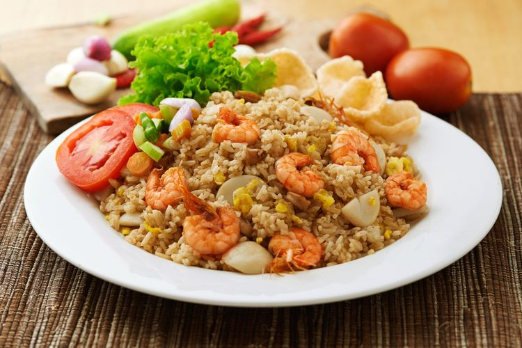
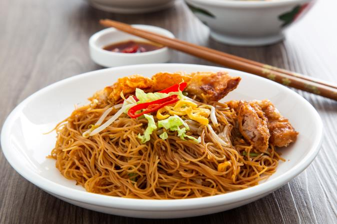

Nasi Goreng
Nasi goreng khas Warung Rasa Asia dengan sentuhan modern. Dihadirkan dalam tampilan yang menggugah selera dengan nasi goreng lezat yang digoreng sempurna, diperkaya dengan rempah-rempah pilihan dan sajian beragam tambahan seperti telur, ayam, atau udang. Setiap gigitan adalah petualangan rasa yang tak terlupakan!
Mie Goreng
Mie goreng pedas yang dihasilkan dari perpaduan rempah-rempah eksotis dan mie yang kenyal. Sajikan dalam porsi besar, ditambah dengan pilihan daging ayam, udang, atau campuran seafood. Rasakan sensasi pedas yang meledak di mulut Anda!
Bihun Goreng
Bihun yang lembut dan rasa manis gurih yang sempurna. Bihun goreng kami selalu segar dan diolah dengan bumbu rahasia kami. Pilihan tambahan seperti daging sapi, tahu, dan sayuran membuat hidangan ini semakin spesial.
Kwetiauw Goreng

Kwetiauw goreng ala Warung Rasa Asia yang melegenda. Kwetiauw lembut yang digoreng dengan sempurna, disajikan dengan pilihan daging ayam, udang, atau campuran seafood. Rasakan sentuhan autentik rasa Asia dalam setiap suapan!
Mie Rebus

Mie rebus yang hangat dan menyegarkan, cocok untuk penyegaran tubuh Anda. Disajikan dalam kuah gurih yang lezat dengan potongan daging ayam yang lembut, telur rebus, dan sayuran segar. Makanan yang tepat untuk menghangatkan hati Anda!
Bihun Rebus
Bihun rebus yang lembut dalam kuah kental yang begitu lezat. Diberi tambahan daging sapi yang empuk, potongan sayuran segar, dan taburan bawang goreng. Kelezatan dalam kesederhanaan.
Kwetiauw Rebus
Kwetiauw rebus dengan harga yang terjangkau namun tetap lezat. Sajian kuah gurih dengan pilihan daging ayam atau udang yang bikin kenyang. Rasakan kenikmatan kwetiauw dalam hidangan yang sederhana.